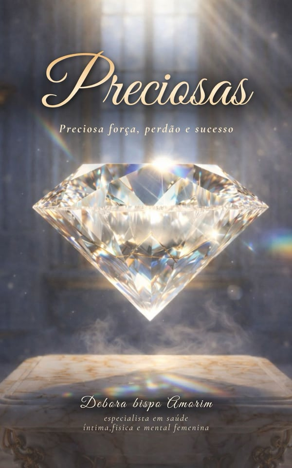

INSTITUTO PRECIOSA
O Instituto Preciosa nasce com o propósito de acolher, educar e transformar vidas por meio da promoção da saúde, do desenvolvimento humano e da valorização da mulher.
Acreditamos que toda mulher merece acesso à informação, cuidado, acolhimento e oportunidades para reconstruir sua história com dignidade.
Nosso trabalho será desenvolvido através de palestras, cursos, capacitações, projetos sociais, atendimento humanizado e ações comunitárias.

MISSÃO
Promover saúde, educação, acolhimento e desenvolvimento humano, fortalecendo mulheres, adolescentes, famílias e comunidades por meio do conhecimento e do cuidado integral.

VISÃO
Ser referência nacional em educação em saúde, acolhimento feminino e desenvolvimento social, impactando positivamente milhares de vidas.

VALORES
Humanização · Ética · Respeito · Amor ao próximo · Compromisso social · Excelência · Inclusão · Responsabilidade · Empatia · Transformação

PÚBLICO-ALVO
Mulheres · Adolescentes · Gestantes · Famílias · Escolas públicas e particulares · Empresas · Igrejas · Universidades · Comunidades · Organizações sociais
Transformando vidas através da saúde, da educação e do acolhimento,
porque toda mulher é preciosa.
Áreas de Atuação
Saúde da Mulher
Saúde do Adolescente
Inteligência Emocional
Desenvolvimento Profissional
Assistência Social
Cursos
Palestras
Projetos Sociais
- Preciosa na Escola Educação em saúde para adolescentes.
- Preciosa na Comunidade Mutirões de orientação e prevenção.
- Preciosa Empresarial Palestras para colaboradores.
- Mãe Preciosa Acompanhamento educativo para gestantes.
- Mulher que Floresce Grupo de fortalecimento emocional.
- Envelhecer com Dignidade Promoção da saúde e qualidade de vida para pessoas idosas.
Nosso Espaço
Muito mais que uma clínica, criamos um verdadeiro refúgio urbano para a mulher. Um ambiente sensorial onde a arquitetura, a luz e o silêncio se encontram para abraçar você. Aqui, o luxo está no cuidado com os mínimos detalhes, garantindo uma experiência de absoluto conforto, sigilo e renovação.


Débora Amorim
Mergulhe na jornada inspiradora da mente brilhante por trás do Espaço Preciosa. Conheça sua história, sua obra "Preciosas" e descubra os passos para a cura, o perdão e a reinvenção da sua feminilidade.
Conheça Débora
PRECIOSAS